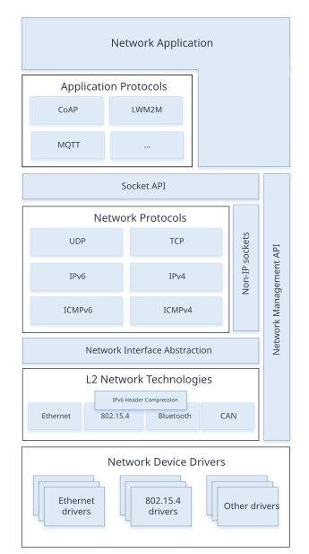
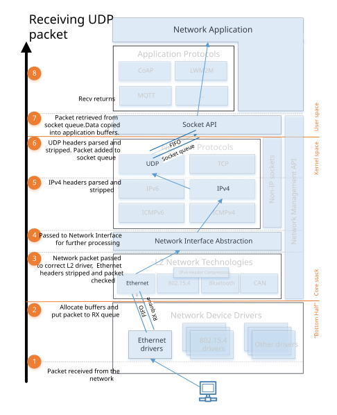
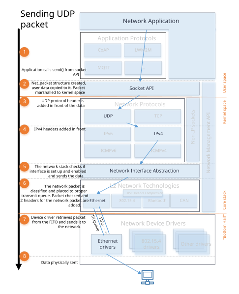

Network Stack Architecture
The Zephyr network stack is a native network stack specifically designed for Zephyr OS. It consists of layers, each meant to provide certain services to other layers. Network stack functionality is highly configurable via Kconfig options.
High level overview of the network stack

Network stack overview
The network stack is layered and consists of the following parts:
Network Application. The network application can either use the provided application-level protocol libraries or access the BSD socket API directly to create a network connection, send or receive data, and close a connection. The application can also use the network management API to configure the network and set related parameters such as network link options, starting a scan (when applicable), listen network configuration events, etc. The network interface API can be used to set IP address to a network interface, taking the network interface down, etc.
Network Protocols. This provides implementations for various protocols such as
Application-level network protocols like CoAP, LWM2M, and MQTT. See application protocols chapter for information about them.
Core network protocols like IPv6, IPv4, UDP, TCP, ICMPv4, and ICMPv6. You access these protocols by using the BSD socket API.
Network Interface Abstraction. This provides functionality that is common in all the network interfaces, such as setting network interface down, etc. There can be multiple network interfaces in the system. See network interface overview for more details.
L2 Network Technologies. This provides a common API for sending and receiving data to and from an actual network device. See L2 overview for more details.
These network technologies include Ethernet, IEEE 802.15.4, Bluetooth, CANBUS, etc.
Some of these technologies support IPv6 header compression (6Lo), see RFC 6282 for details. For example ARP (RFC 826) for IPv4 is done by the Ethernet component.
Network Device Drivers. The actual low-level device drivers handle the physical sending or receiving of network packets.
Network data flow
An application typically consists of one or more threads that execute the application logic. When using the BSD socket API, the following things will happen.

Network RX data flow
Data receiving (RX)
A network data packet is received by a device driver.
The device driver allocates enough network buffers to store the received data. The network packet is placed in the proper RX queue (implemented by k_fifo). By default there is only one receive queue in the system, but it is possible to have up to 8 receive queues. These queues will process incoming packets with different priority. See Traffic Classification for more details. The receive queues also act as a way to separate the data processing pipeline (bottom-half) as the device driver is running in an interrupt context and it must do its processing as fast as possible.
The network packet is then passed to the correct L2 driver. The L2 driver can check if the packet is proper and modify it if needed, e.g. strip L2 header and frame check sequence, etc.
The packet is processed by a network interface. The network statistics are collected if enabled by
CONFIG_NET_STATISTICS.The packet is then passed to L3 processing. If the packet is IP based, then the L3 layer checks if the packet is a proper IPv6 or IPv4 packet.
A socket handler then finds an active socket to which the network packet belongs and puts it in a queue for that socket, in order to separate the networking code from the application. Typically the application is run in userspace context and the network stack is run in kernel context.
The application will then receive the data and can process it as needed. The application should have used the BSD socket API to create a socket that will receive the data.

Network TX data flow
Data sending (TX)
The application should use the BSD socket API when sending the data.
The application data is prepared for sending to kernel space and then copied to internal net_buf structures.
Depending on the socket type, a protocol header is added in front of the data. For example, if the socket is a UDP socket, then a UDP header is constructed and placed in front of the data.
An IP header is added to the network packet for a UDP or TCP packet.
The network stack will check that the network interface is properly set for the network packet, and also will make sure that the network interface is enabled before the data is queued to be sent.
The network packet is then classified and placed to the proper transmit queue (implemented by k_fifo). By default there is only one transmit queue in the system, but it is possible to have up to 8 transmit queues. These queues will process the sent packets with different priority. See Traffic Classification for more details. After the transmit packet classification, the packet is checked by the correct L2 layer module. The L2 module will do additional checks for the data and it will also create any L2 headers for the network packet. If everything is ok, the data is given to the network device driver to be sent out.
The device driver will send the packet to the network.
Note that in both the TX and RX data paths, the queues (k_fifo’s) form separation points where data is passed from one thread to another. These threads might run in different contexts (kernel vs. userspace) and with different priorities.
Network packet processing statistics
See information about network processing statistics here.